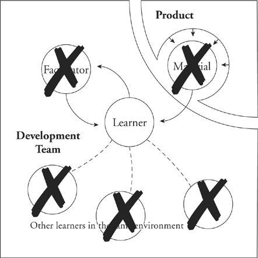

Learning How to Manage
Companies need to learn a lot of different things, but the most essential of these is management. Nonmanagers are promoted all the time; lower-level managers are promoted up to tasks where the management skills required are qualitatively different. How do they learn? Sadly, they are most often obliged to learn in a depleted learning environment.

Here we see no coach, no peer facilitator. There is no material, other than the whole job, no easy, unthreatening piece carved off to provide an ideal learning exercise. And there are no evident co-learners. The new manager is expected to learn whatever needs to be learned in almost complete isolation.
In my own case, as a young manager I was alone inside a closed office. I had access to my boss, but not to the people who really could have helped, the other managers at my own level. Each new management challenge I faced caused me to wonder, How on earth would Sharon or George or Eugene (my peer managers) deal with such a problem? I’d have killed for the opportunity to be a fly on the wall of one of their offices, just to be able to watch an expert at work. There was a complex and ugly set of rules in that culture that made it impossible for managers to ask each other for help.
Oh yes, young managers are often supplied a bit of management training. The problem with such training is that it’s all abstraction and no example. It is no replacement for the context of the team where you learned your earlier skills by actually applying them to pieces of real work. While we’re at it, management training tends to teach only the mechanics of management (reporting, running the scheduling system, Gantt charting, PERT analysis), and none of the really difficult things that distinguish good managers from bad: people selection and motivation, team jelling, listening, promoting, choosing correctly when to entrust new responsibility.
Most of us don’t learn well from abstraction. We learn from example. That’s part of the reason why we don’t learn well in isolation. The skills of management—like the skills of parenting—are best learned by example and with the help of able coaching and shared experience of peer learners.
Why can’t new managers learn their skills in the context of a team? After all, there is something that is at least called a management team at virtually every company.